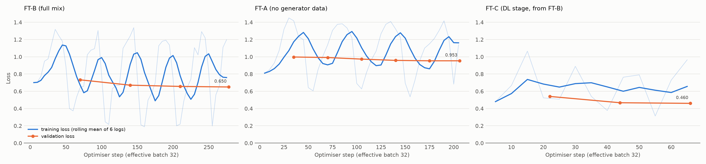
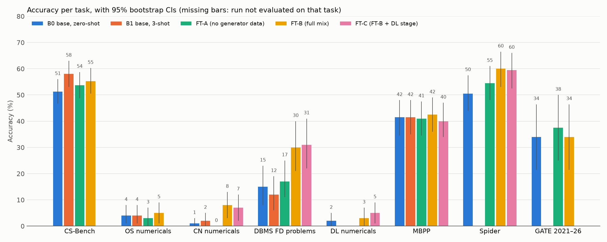

We took a small, free AI model that runs on a laptop, taught it Computer Science using carefully checked training data, and then measured fairly whether it actually got better.
Students need help with CS subjects, especially numerical problems like CPU scheduling, page faults, subnetting, normal forms and CNN output sizes. Big AI models (like ChatGPT) are good at this but need the internet and can cost money. Small models run on your own laptop for free, but they get these numerical problems wrong.
A language model is a program that has read a huge amount of text and learned to predict the next word. When you ask it a question, it writes an answer one word (token) at a time. ChatGPT and Claude are large language models with hundreds of billions of parameters.
A parameter is one number inside the model that was learned during training. More parameters usually means more knowledge, but also more memory and a more expensive computer.
We used Qwen2.5-1.5B-Instruct, which has 1.5 billion parameters. That is small enough to run on a normal laptop with no internet and no cost. The catch: out of the box it scored only 4% on OS numericals and 1% on CN numericals in our tests.
The base model is like a student who has read a lot of general books. Fine-tuning is like giving that student a focused CSE workbook with worked solutions, so they learn the exact style and steps examiners expect.
Technically, we show the model thousands of (question, ideal answer) pairs and slightly adjust its parameters so that it becomes more likely to produce the ideal answers. This is called supervised fine-tuning (SFT).
Changing all 1.5 billion parameters needs a lot of memory. LoRA (Low-Rank Adaptation) freezes the original model and adds small "adapter" matrices next to its layers. Only the adapters are trained.
With 100 test questions, getting 3 more right can happen by chance. Many student projects report "accuracy went up" without checking this. We checked every claim.
Most similar projects follow one recipe: ask ChatGPT to write thousands of Q&A pairs, fine-tune on them, show that a score went up. Our project differs in five ways.
For OS, CN, DBMS and Deep Learning we wrote Python generators. Each one creates a random problem and then runs the real algorithm to compute the answer: it simulates the CPU schedule, the page-replacement frames, the CRC division, the attribute closure, the convolution. So every one of the 3,000 training answers is correct by construction.
AI-written answers can contain mistakes, and a small model copies them. Ours cannot. The generators are themselves tested against textbook examples (Silberschatz) and, for Deep Learning, against PyTorch, which computes the same answers independently.
We trained two models that differ in exactly one thing: FT-B got the verified problems, FT-A did not. FT-B improved on numericals; FT-A did not move from the base model. This shows the improvement comes from the verified data, not just from "more training".
For GATE/ISRO past questions, Gemini wrote explanations without seeing the answer key. We kept an explanation only if Gemini's answer matched the official key (990 of 1,154 kept). Wrong reasoning was thrown away instead of being learned.
All training and testing ran on an integrated Intel GPU, not a cloud server. We solved real engineering problems (memory limits, the GPU not supporting 4-bit models, laptop sleep interrupting training) and delivered a working chat app with model switching, a practice app that grades the model automatically, and a research paper.
In addition, the error analysis (Chapter 7) gives a clear finding: the model fails mainly at executing procedures, not at knowing them. That points to specific next steps.
PROJECT_PLAN.md.eval/run_eval.py): one program that asks the model every test question, grades the answers and saves everything.Every answer ends with a "Final answer:" line, so a grader program can check it automatically.
| Test | B0 zero-shot | B1 3-shot |
|---|---|---|
| CS-Bench (concept MCQs) | 51.2% | 58.0% |
| OS numericals | 4% | 4% |
| CN numericals | 1% | 2% |
| DBMS FD problems | 15% | 12% |
| MBPP (Python coding) | 41.5% | 41.5% |
The base model can answer some concept questions, but it is almost useless on numericals, and showing it 3 examples does not help. This is the gap the project targets.
A model is only as good as what it learns from. We combined eight sources, each with its own quality check:
| Source | Examples | What it teaches | Quality check |
|---|---|---|---|
| Verified generators (OS, CN, DBMS) | 2,400 | numerical problem solving | answers computed by code |
| GATE / ISRO past questions | 978 | exam-style MCQs with explanations | kept only if the explanation matches the official key |
| Concept Q&A (Gemini) | 1,458 | theory across a 133-topic syllabus | MCQ/TF answers must match the key |
| Open textbooks Q&A | 1,170 | grounded explanations | answerable from the textbook passage |
| Spider | 1,335 | writing SQL from English | the correct SQL must run |
| MBPP + CodeAlpaca | 1,495 | Python programming | tests pass / code parses |
| Replay (general) | 499 | keeps general ability | length filter |
Gemini's free tier allows about 20 requests per model per day, so the work was spread over several days and several Gemini models, with caching so nothing was asked twice. Whenever Gemini produced an answer that could be checked against a key, it was checked.
Exam papers (GATE/ISRO) are copyrighted, so their text is used for training but never uploaded to the public GitHub repository. Textbooks used are openly licensed (CC BY / CC BY-SA). The API key is stored locally and never committed.
We trained two models with identical settings so that the comparison is fair:
| Model | Training data | Examples | Steps | Time |
|---|---|---|---|---|
| FT-B | full mix | 8,868 | 278 | ≈ 4.8 h |
| FT-A | same mix without the verified generators | 6,588 | 206 | ≈ 3.7 h |
| Problem | Solution |
|---|---|
| 4-bit QLoRA does not work reliably on Intel GPUs | Used standard LoRA in bf16; the adapter is the same size |
| Out of memory at batch size 4 (the model's 152,000-word vocabulary makes outputs huge) | Batch size 1 with 32 accumulation steps: same effective batch |
| Laptop slept / battery died during training | Automatic checkpoints, resume from the last checkpoint, a keep-awake helper |
| Slow generation during testing | Batched generation (64 questions at once): 2.8 → 144 tokens per second |

| Test (unseen questions) | Base | FT-A (no verified data) | FT-B (full) | Significant? |
|---|---|---|---|---|
| Spider: write SQL | 50.5% | 54.5% | 60.0% | Yes (p = 0.011) |
| DBMS functional-dependency problems | 15% | 17% | 30% | Yes (p = 0.017) |
| CN numericals | 1% | 0% | 8% | Yes (p = 0.039) |
| CS-Bench concepts | 51.2% | 53.8% | 55.2% | No |
| OS numericals | 4% | 3% | 5% | No |
| MBPP: Python coding | 41.5% | 41.0% | 42.5% | No (kept, not lost) |
| GATE CS 2021–26 | 33.9% | 37.5% | 33.9% | No (only 56 questions) |

FT-B trained for 35% more steps than FT-A, so part of the difference could come from extra training. A perfectly matched comparison is listed as future work.
Scores tell you how much; error analysis tells you why. We took 50 random wrong answers from FT-B, read each one and gave it a category.
| Error type | Share | Example |
|---|---|---|
| Procedure / step tracking | 52% | Stops computing an attribute closure after one step; orders FCFS by process number instead of arrival time |
| Knowledge gap | 16% | Confuses deadlock avoidance with deadlock prevention |
| Schema hallucination (SQL) | 12% | Uses a column from the wrong table |
| Arithmetic / units | 8% | Writes 0.96 ms as 9.6 ms |
| Misread the task | 6% | Returns a number when the tests expect True/False |
| Answer contradicts own reasoning | 4% | Explains why A is right, then answers B |
| Unclear question | 2% | Badly translated benchmark question |
The model learned the format and the method perfectly: zero formatting failures in the sample. What it cannot do reliably is carry out a long procedure step by step without losing track. It imitates the shape of a solution without truly executing it. This is a known limit of small models, and our analysis shows exactly where it bites.
Retraining everything from scratch with DL would take about 8.5 hours. Instead we used continued training: start from FT-B's adapter and train a short extra stage.
| Test | Base | FT-B | FT-C | Meaning |
|---|---|---|---|---|
| DL numericals: share of correct numbers | 12.6% | 15.8% | 26.0% | Significant (p = 0.013) |
| DL numericals: fully correct | 2% | 3% | 5% | Small; arithmetic slips |
| DBMS FD problems | 15% | 30% | 31% | Kept |
| CN numericals | 1% | 8% | 7% | Kept |
| Spider SQL | 50.5% | 60.0% | 59.5% | Kept |
| MBPP coding | 41.5% | 42.5% | 40.0% | Kept (difference is luck) |
A DL answer often has several numbers (output height, width, depth, parameters). "Fully correct" needs all of them right, so one slip gives zero. "Share of correct numbers" gives partial credit, like an examiner giving step marks. It shows FT-C learned the formulas (convolution 22→47%, softmax 0→56%, metrics 22→44%) even when one multiplication goes wrong.
Gradient-descent and momentum problems got worse, and attention and backpropagation stayed at 0%. These need long chains of decimal arithmetic, which is exactly the weakness found in the error analysis.
How it works: a Python server (FastAPI) loads the base model once and attaches all three LoRA adapters by name. Switching models just switches the adapter, with no reloading.
A 4-page IEEE-style paper (paper/CSE-Tutor_paper.pdf) with abstract, method, results tables, figures, error analysis, limitations and 15 references.
| Goal | Command (inside the project folder) |
|---|---|
| Chat with the model | python demo/server.py, then open http://127.0.0.1:8000 |
| Practice problems demo | python demo/app.py, then open http://127.0.0.1:7860 |
| Run all 44 tests | python -m unittest discover -s tests -t . |
| Rebuild results tables | python eval/summarize.py |
| Rebuild figures | python eval/plots.py |
| Rebuild the paper PDF | paper\build_pdf.cmd |
The trained adapters are in outputs/ on the laptop and are not on GitHub. Keep a backup. Start the chat app 2 minutes before the demo, because loading the model takes time. A good live question: "For R(A, B, C, D) with FDs A → B, B → C, C → D, find the closure of A and all candidate keys."
| Phase | Main outputs |
|---|---|
| Week 1 | Plan, OS generators + tests, evaluation harness, baselines B0/B1 |
| Week 2 | CN + DBMS generators, GATE/ISRO, Gemini Q&A, textbooks, Spider/MBPP, cleaned dataset |
| Week 3 | Trained FT-B and FT-A, evaluated on 7 tests with statistics |
| Week 4 | Error analysis, figures, Gradio demo, final report |
| Extension | DL generators, FT-C, chat app, research paper |
| Ablation | An experiment that removes one ingredient to see its effect (FT-A = FT-B minus verified data). |
| Adapter | The small set of LoRA weights added to the frozen model; it can be switched on or off. |
| Baseline | The model before any training, used for comparison (B0, B1). |
| Checkpoint | A saved copy of training progress, so training can resume after an interruption. |
| Confidence interval | The range in which the true score very likely lies. |
| Contamination | Test questions leaking into training data, which makes scores unfairly high. We removed it. |
| Epoch | One full pass over the training data. |
| Fine-tuning | Further training of a pre-trained model on a specific task. |
| Few-shot / zero-shot | Asking with or without worked examples in the prompt. |
| Generator | Our Python program that creates a random problem and computes its correct answer. |
| Hallucination | The model stating something false or invented, e.g. a SQL column that does not exist. |
| Learning rate | How big each adjustment is during training. |
| LoRA | Low-Rank Adaptation: trains small extra matrices instead of the whole model. |
| Loss | A number measuring how wrong the model's predictions are; training lowers it. |
| McNemar test | A significance test comparing two models on the same questions. |
| Parameter | One learned number inside the model. |
| Replay data | Old training examples mixed into new training to prevent forgetting. |
| SFT | Supervised fine-tuning: learning from (question, ideal answer) pairs. |
| Token | A piece of a word; models read and write tokens. |
| Validation set | Examples kept aside during training to check that the model generalises. |
Full details: docs/FINAL_REPORT.md · paper/CSE-Tutor_paper.pdf · weekly reports in docs/ · results in eval/results/RESULTS.md.